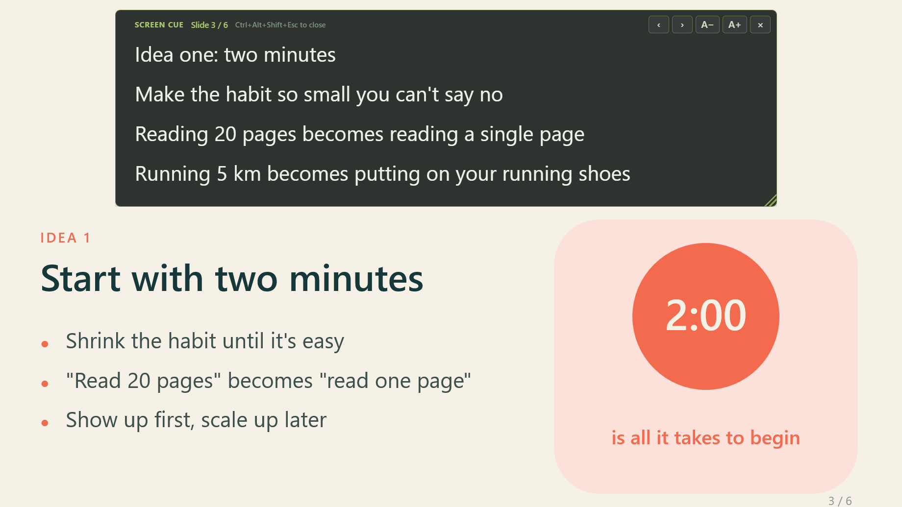
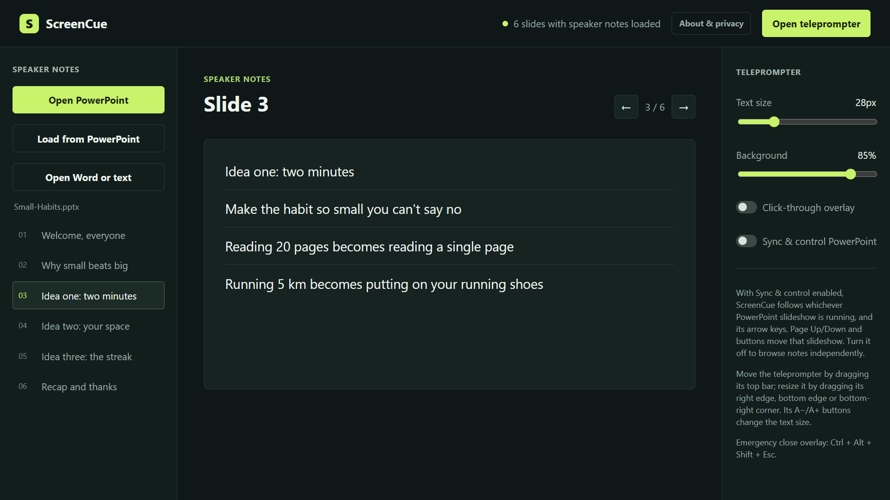
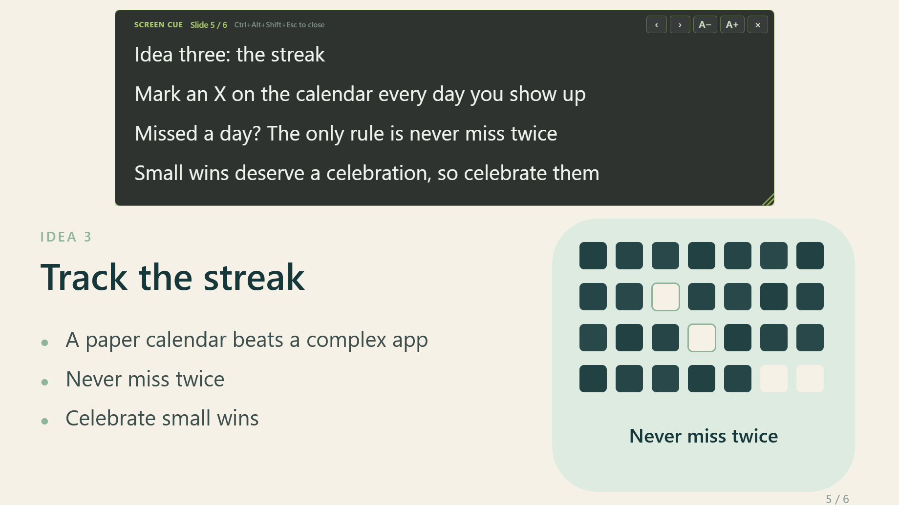
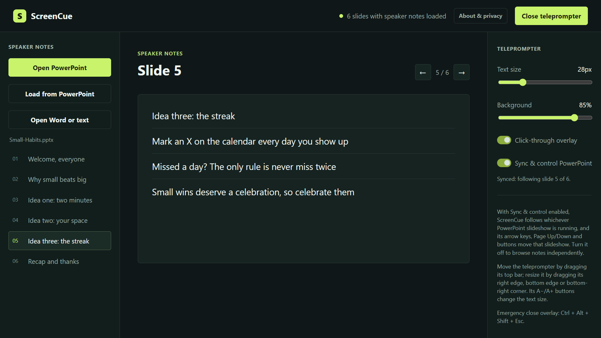

A private teleprompter for your PowerPoint speaker notes
ScreenCue shows your speaker notes in an always-on-top window over your slides. When you share or record your screen, Windows leaves the teleprompter out, so your audience sees only your slides.
Windows 10 (1809 or later) and Windows 11 · No account · Nothing uploaded

What ScreenCue does
Your notes, slide by slide
Open a PowerPoint presentation and ScreenCue reads its speaker notes on your PC. No PowerPoint needed for standard .pptx files.
Hidden from screen sharing
Windows keeps the teleprompter out of screen sharing and recordings on Windows 10 version 2004 or later and Windows 11.
Follows your slideshow
With Sync & control PowerPoint on, the notes change with your slides. Clickers, arrow keys and Page Up/Down keep working.
Fits where you look
Move and resize the teleprompter, set text size and background opacity, and turn on click-through once it's in place.
Any notes, not just slides
Open a Word, text or Markdown file as one scrolling cue for talks, webinars or recorded videos.
Private by design
No account, no cloud sync, no analytics. Your presentations and notes never leave your PC.
How it works
- Open your presentation (.pptx) or a Word, text or Markdown notes file.
- Select Open teleprompter and place it where you look while you talk. Near your webcam works well on video calls.
- Turn on Sync & control PowerPoint, start your slideshow and present. Your notes follow your slides.
Step-by-step for video calls: How to see your speaker notes while sharing your screen.
Screenshots



Frequently asked questions
What is ScreenCue?
ScreenCue is a Windows app that turns your PowerPoint speaker notes into a private teleprompter. Your notes appear in an always-on-top window over your slides, and Windows leaves that window out when you share or record your screen.
Will my audience see my notes when I share my screen?
No, on Windows 10 version 2004 or later and on Windows 11. ScreenCue asks Windows to exclude the teleprompter from screen capture, so screen sharing and screen recording show what is behind it instead. On earlier versions of Windows 10, a black box may appear in its place. A camera pointed at your screen, or a hardware capture device, would still see it.
Does it work with Microsoft Teams, Zoom or Google Meet?
ScreenCue doesn't plug into any meeting app. Windows itself keeps the teleprompter out of screen capture, so it is hidden whichever app you use to share your screen. Before an important talk, run a short test call to check what your audience sees.
Do I need PowerPoint installed?
Not to read notes. ScreenCue reads standard .pptx presentations and Word (.docx), text and Markdown notes on its own. PowerPoint for Windows is needed to follow and control a running slideshow, and to load notes from legacy .ppt, protected or damaged presentations.
Can the notes follow my slides automatically?
Yes. Turn on Sync & control PowerPoint and ScreenCue follows the slideshow running in PowerPoint, showing the notes for the current slide. Your clicker, the arrow keys and Page Up/Down still move the slides, because the teleprompter never takes keyboard focus.
Are my presentations or notes uploaded anywhere?
No. ScreenCue works on your PC. It has no account, cloud sync, analytics or telemetry, and it doesn't upload your presentations or notes. See the privacy policy.
How much does ScreenCue cost?
US$0.99, a one-time purchase from the Microsoft Store. The Store shows the price in your local currency.
Is there a Mac version?
No. ScreenCue runs on Windows 10 (version 1809 or later) and Windows 11.
Which files can ScreenCue open?
PowerPoint .pptx, .pptm, .ppsx, .ppsm and .potx files on its own; .ppt, .pps and .pot files through PowerPoint; and Word .docx, plain text (.txt) and Markdown (.md) notes.